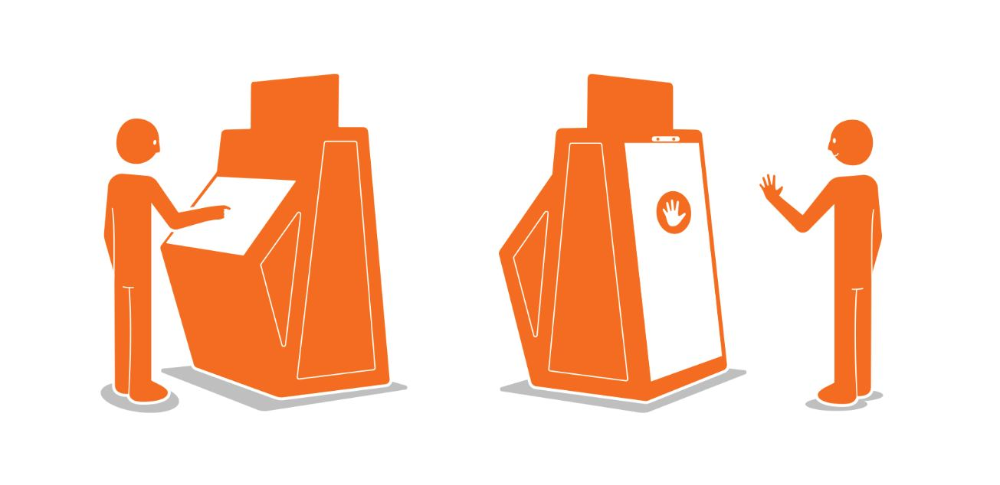

World Vision
World Vision Retail Engagement
Digital signage that notices you, then tells a story.
To support fundraising at malls and special events, and to give volunteers better tools to engage the public, World Vision turned to a digital way of telling the stories of its work around the world.
We used gesture recognition and computer vision to create a digital signage platform that reacted to people's presence and drew them in to interact and learn about child sponsorship. Each unit can be themed for seasons and campaigns, and collect donations on the spot.
